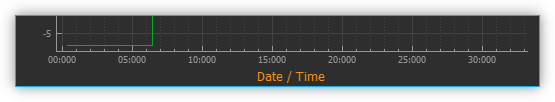

19. Graphical Data Logger
19.1. Introduction
In addition to recording data in CSV files, you can use the Datalogger plug-in to record process data in diagrams and thus graphically visualise the changes in these process data over time in real time. Use the push button Logging ❶ (see figure below) in the sidebar to display the process data graphs or show the logging view via the main menu : ❷.
To display the process data diagrams, click on the Logging button ❶ in the sidebar (see figure below) or show the Logging View via the main menu : ❷.

The main elements of the process data graph area are as follows:
Logging button - Click this to show the process data graphs.
View Menu- this can also be used to show and hide the process data graph
Graph canvas - This displays the curves of all process data sets that are being recorded.
Legend - The legend lists all data sets that are displayed with their respective colors. Here you can toggle between whether or not a curve is being displayed.
Toolbar - Here you find buttons to configure the data logging, to start and stop the recording and to navigate the display.
19.2. Toolbar
|
Opens the configuration dialog of the graphic process data logger. |
Toggles the recording of process data. |
|
|
Panning tool to move the currently displayed section of the graph. |
|
Draws a zoom-in frame to enlarge a desired area of the graph. |
|
Auto-scales the X axis to fit all process data on the screen. |
|
Auto-scales the Y axis to fit all process data on the screen. |
|
Auto-scales both X and Y axes to fit all process data on the screen. |
|
Activates auto-scaling: during a recording, both x- and y-axes are continuously rescaled to fit all process data on the screen. |
|
Show all curves. If curves are hidden, they are displayed again. |
|
Clear plot data. Deletes all data from the diagram. |
|
Toggle X-axis scale. Skalierung umschalten. This switches the scaling of the X-axis between absolute date/time stamp and relative time in seconds and milliseconds since the start of recording. |
|
Export plot image. Exports an image of the currently displayed section. |
|
Export CSV-File. Exports all data of the plot as CSV file |
|
Saves the plot data to a file that can later be reloaded into the plot |
|
Loads previously saved plot data |
19.3. Configuration Dialog
19.3.1. Overview

Click on the button Configure process data graph in the toolbar to open the configuration dialog. This opens the Plot Logger Configuration dialog that contains the following main sections:

Object Tree - The Object Tree contains a tree of all objects and their properties that are present in the application. You can use various filters to filter the object tree for specific objects. By default, only devices and device properties are displayed.
Logger Channels - lists all channels that may be recorded by the logger.
Logger Configuration - in this section you find various settings to configure the data recording.
19.3.2. Object Tree
In the Object Tree you will find a hierarchical list of all objects (e.g. devices) and their child objects (such as child devices):

Object - An object can be, for example, a device (here Nemesys_M_1) or another application object. You will find the two elements Children and Properties in each object after expanding it in the next level.
Children - The Children element groups all child objects of the parent object. In our example, these are all objects or devices that are subordinate to the device Nemesys_M_1 or belong to this device.
Properties - The Properties element groups all properties of the parent object. In our example, these are all the properties of the Nemesys_M_1 device that can be recorded in the logger.
Child Object - All child objects can be found in the Children group. In the example Nemesys_M_1, these are, for example, the digital and analogue inputs and outputs of the device, such as Nemesys_M_1_DigOUT1. These objects can in turn be expanded to display their child objects and properties.
Property - In the Properties group you will find all properties of the parent object. In the example of Nemesys_M_1, these are, for example, the properties SyringeFillLevel or ActualFlow. You can simply drag and drop these properties into the channel list to record their values.
19.3.3. Filtering the Object Tree
Above the object tree you will find various filters with which you can filter the object tree according to certain criteria. The Devices Only ❶ checkbox is activated by default. This means that only devices that are managed by the internal device manager (Core.DeviceManager) are displayed in the object tree. If you deactivate this checkbox, other application objects are displayed in the object tree.
If the Devices Only❶ checkbox is activated, a selection box ❷ is displayed with which you can filter the device tree according to a specific device type. In the illustration below, for example, the tree was filtered for syringe pumps:

In addition, you will find an input field ❸ directly above the object tree, with which you can filter the object tree according to a specific term, e.g. a device name or a device property. In the image below, for example, a filter has been set for the device property ActualFlow. This means that only objects or devices with this property are displayed in the object tree:

19.3.4. List of Logger Channels

The channel Logger Channels list shows the configuration of the graphical logger in tabular form. Each line in the table corresponds to exactly one curve in the diagram, i.e. one logger channel. The following columns are available:
Object - contains the name of the object from which the value of a certain property is to be recorded and the icon of the object.
Property - this is the name of the object property/process data value that will be recorded. Its type (numeric or boolean) can be identified by the displayed icon.

Numeric value

Boolean value

Text value
Label - allows you to define a customized label for the selected channel. This label will also be used in the legend of the plotted graph.
In order to add a channel to the data logging process, simply follow the steps below:
19.4. Logger Configuration
19.4.1. Add Logger Channels
Step 1- Adding of Channels

Drag-and-Drop the object property you want to record from the Object Tree into the Logger Channels list. The new channel is inserted in the line where you release the mouse button (see figure below).
Tip
To simplify the selection of an object property, you can filter the object tree according to various criteria.
Step 2 - Setting the Channel Label
In the column Label you can customize the label for each channel. This label will later be displayed in the legend of the graph as the label of the curve.

To do this, double-click into the respective table cell that is to be changed and insert the new label text (see figure above).
Important
Upon choosing a new device property, a new channel description will be assigned automatically. That is, you should change the channel label only once the correct device property has been selected.
Step 3 - Defining the Recording Interval

In the Log Interval field in the Logger Configuration area, you can define the interval at which new measured values are to be recorded. You can set the interval with a resolution of 0.1 seconds.
Important
Choose a log interval that is as large as possible and as small as necessary in order to minimize the amount of data that needs to be recorded and transmitted by the system.
19.4.2. Deleting Channels
Highlight the desired channels using the mouse to delete one or more channels from the list, and then use either the Delete key or the item of the right-click context menu:


To delete the entire channel list, use the context menu item .
19.5. Start/Stop Data Logging
The data logging process may be started/stopped via the relevant button in the toolbar.
19.6. Diagram Navigation & Use
19.6.1. Diagram Navigation Overview
The processdata graphing plug-in offers a number of possibilities to customize the way data are displayed. This includes resizing parts of a curve and showing or hiding individual curves.

The diagram consists of a plot area ❶ plus both an X-axis (time) ❸ and a Y-axis (process data) ❹. The time axis shows date and time as absolute values. The process-data axis shows the respective measurement data; it is without units as it potentially represents a variety of very different values and measurement units.
A right mouse click within the plot area will open a context menu ❷ with a number of additional functions.
19.6.2. Changing the Displayed Section

The Pan Tool provides you with a simple way to move the displayed section of the plot area. It may be activated via its toolbar button and the displayed section may then be moved around using the mouse whilst keeping the left button pressed.
Important
Panning of the displayed plot section will deactivate the auto-scaling of the diagram axes.
19.6.3. Display Curve Values
When the Pan Tool is active, you can move the mouse pointer over a curve to display the value at that specific position.

19.6.4. Zooming via the Mouse Wheel
Turning the mouse wheel whilst the pointer is within the plot area will allow you to adjust the displayed section of a graph by increasing (zooming in) or decreasing (zooming out) its zoom level.
|
Increase zoom level (zoom in) |
|
Decrease zoom level (zoom out) |


{kind=link}
19.6.5. Display Section

The Zoom Tool allows you to directly select a specific area of the plot and increase its resolution. To do this, please proceed as follows (see figure below):

Using the mouse, left-click-and-hold into the plot area to set the first corner of the zoom frame.
Move the mouse pointer to define the size of the frame as desired.
Releasing the mouse button will finalize the size of the frame. The selected area will be scaled to the current graph size (zoom in).
19.6.6. Auto-Fit & Auto-Scale
The toolbar and the context menu both contain a number of tools to adjust what is displayed in the diagram, in particular to ensure that all or specific data are visible.
The following possibilities exist:
|
Rescales the X axis to display all current time data values for a given process data resolution. |
|
Rescales the Y axis to display all current process data values within a given time period. |
|
Rescales both X and Y axes to display all currently available data. |
|
(Re-)activates auto-scaling: as long as data are being recorded, both X and Y axes will be adjusted dynamically to ensure all data are being displayed. |
You may also activate auto-scaling for X and Y axes individually via the context menu:

Important
Zooming or panning within the displayed plot section will deactivate auto-scaling.
19.6.7. Show/Hide Individual Curves
To improve scaling and visibility, you may show or hide individual curves. To do this, right-click the desired item in the plot legend and select the desired function to either hide the corresponding curve only or all other but the corresponding curve as indicated in the figure below.

To revert to displaying all curves, activate the context menu from within the plot area and select the menu item (see figure below).

19.6.8. Select Curve Color
To choose a different curve color, right click an item in the plot legend. From the context menu select the menu item (see figure below).

In the color selection dialog which is now shown (figure below), you can choose any color.

19.6.9. Exporting Plot Image

You may export a picture of the current diagram using the right-click context menu and selecting .

This will open a dialog box (see figure below) to define the location (folder) where the image is to be saved:

Please enter a name for the image file ❶ and select the desired file
type ❷. The export function supports standard image file formats
png, jpg... as well as scalable vector graphic formats pdf, svg....
To close the dialog and to start the image export, click Save ❸.
19.6.10. CSV Export

You can export all diagram data to a CSV file using the menu item.
19.6.11. Deleting of Diagram Data

You may clear the plot area and delete all data recorded since the start of the present recording using the context menu item . Recording will resume from this point.

19.6.12. Switching the scaling of the X-axis

You can switch the scaling of the X-axis between two different modes. By default, the X axis displays an absolute date/time stamp.

You can switch the X-axis to display the relative time in seconds and milliseconds. This means that the event t0 marks the point in time at which the recording was started.
To toggle the axis, right-click in the diagram and select from the context menu.

19.6.13. Saving plot data

If you click the Save Plot Data button, all plot data will
be saved to a file *.dat that can be loaded back into the plot
later.
19.6.14. Loading plot data

By clicking the Load Plot Data button, plot data that was previously saved with Save Plot Data can be loaded back into the plot. Only the curves that are present in the current configuration of the logger are loaded. I.e. if you record data, save it with Save Plot Data and load it again later, the logger configuration should be identical when saving and loading. If you change the logger configuration between saving and loading, e.g. remove channels, not all curves may be loaded.
19.7. Script Functions

To automate the capture of data or to synchronize data capture with other processes, the graphical plot logger can be started and stopped using script functions. The corresponding functions can be found in the Logging category in the list of the available script functions.
19.7.1. Start Plot Logger
This function is used to start the graphical logger with the currently configured settings and channels. The current content of the plot is not deleted.

Check Clear Plot before the start of logging if you want to clear all plot data before logging. Starts.
19.7.2. Stop Plot Logger

This function stops the current logging of process data into the process data plot.
19.7.3. Export Plot Data

This function allows you to export the plot data to different formats. In the configuration area you can choose the file name and the saving location by clicking on the folder icon ❶. For the saving location, you should keep the default location within the project folder.

In the Export Formats ❷ area, select all formats you want the plot data to be exported in. The software saves the files with the selected file name + timestamp + the file extension of the export format (see example in figure below):